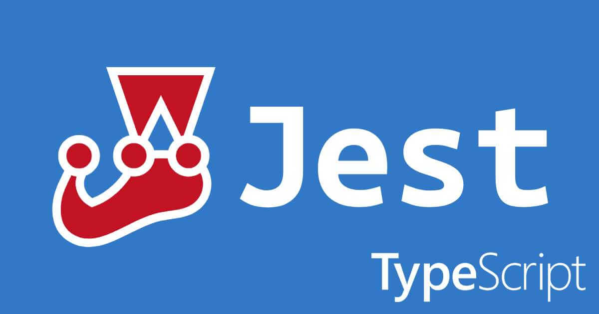
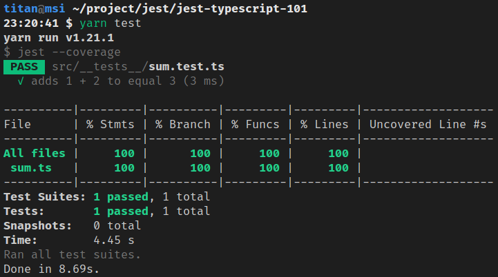

<!DOCTYPE html><html><head><meta charset="utf-8"><title>Jest + TypeScript：建置測試環境 | Titangene Blog</title><meta http-equiv="X-UA-Compatible" content="IE=edge"><meta name="viewport" content="width=device-width,initial-scale=1,maximum-scale=1"><meta name="HandheldFriendly" content="True"><meta name="apple-mobile-web-app-capable" content="yes"><meta name="author" content="Titangene"><link rel="shortcut icon" href="/favicon.ico"><link rel="alternate" href="/atom.xml" title="Titangene Blog"><meta name="description" content="TypeScript 是 JavaScript 的 typed superset，提供強大的型別檢查系統，讓你在編譯時期就能即時發現錯誤，而不是到了 runtime 才發生未知的 bug。上次介紹了 Jest + Babel 的測試環境建置，這次來介紹 Jest + TypeScript 的測試環境建置過程。"><meta property="og:type" content="article"><meta property="og:title" content="Jest + TypeScript：建置測試環境"><meta property="og:url" content="https://titangene.github.io/article/jest-typescript.html"><meta property="og:site_name" content="Titangene Blog"><meta property="og:description" content="TypeScript 是 JavaScript 的 typed superset，提供強大的型別檢查系統，讓你在編譯時期就能即時發現錯誤，而不是到了 runtime 才發生未知的 bug。上次介紹了 Jest + Babel 的測試環境建置，這次來介紹 Jest + TypeScript 的測試環境建置過程。"><meta property="og:locale" content="zh_TW"><meta property="og:image" content="https://titangene.github.io/images/cover/jest-typescript.jpg"><meta property="article:published_time" content="2020-05-31T15:59:10.000Z"><meta property="article:modified_time" content="2020-06-28T14:07:10.125Z"><meta property="article:author" content="Titangene"><meta property="article:tag" content="w3HexSchool"><meta property="article:tag" content="Jest"><meta property="article:tag" content="Unit Testing"><meta property="article:tag" content="TypeScript"><meta property="article:tag" content="Node.js"><meta name="twitter:card" content="summary_large_image"><meta name="twitter:image" content="https://titangene.github.io/images/cover/jest-typescript.jpg"><meta name="twitter:creator" content="@titangeneTW"><meta name="twitter:site" content="@titangene_blog"><meta property="fb:admins" content="100001106016019"><meta property="fb:app_id" content="2470546159839111"><meta property="og:image:width" content="1200"><meta property="og:image:height" content="630"><meta name="google-site-verification" content="AaJ39L7h-nWwJjXJMhAMtXSF6H6BUgGWXC80kYvLic8"><link href="https://fonts.googleapis.com/css2?family=Roboto&display=swap" rel="stylesheet"><link href="https://fonts.googleapis.com/css?family=Source+Code+Pro&display=swap" rel="stylesheet"><link rel="stylesheet" href="https://cdnjs.cloudflare.com/ajax/libs/font-awesome/5.13.0/css/all.min.css"><link rel="stylesheet" href="https://unpkg.com/gitalk/dist/gitalk.css"><link rel="stylesheet" href="/style.css"><script async src="https://www.googletagmanager.com/gtag/js?id=UA-129758206-1"></script><script>!function(a){function n(){dataLayer.push(arguments)}a.dataLayer=a.dataLayer||[],n("js",new Date),n("config","UA-129758206-1")}(window)</script><script>function setLoadingBarProgress(e){document.getElementById("loading-bar").style.width=e+"%"}</script><meta name="generator" content="Hexo 4.2.0"><link rel="alternate" href="/atom.xml" title="Titangene Blog" type="application/atom+xml"></head></html><body><div id="loading-bar-wrapper"><div id="loading-bar"></div></div><script>setLoadingBarProgress(20)</script><header class="l_header"><div class="wrapper"><div class="nav-main container container--flex"><a class="logo flat-box" href="/">Titangene Blog</a><div class="menu"><ul class="h-list"><li><a class="flat-box nav-home" href="/">Home</a></li><li><a class="flat-box nav-archives" href="/archives">Archives</a></li></ul><div class="underline"></div></div><div class="m_search"><form name="searchform" class="form u-search-form"><input type="text" class="input u-search-input" placeholder="Search"> <i class="fas fa-search"></i></form></div><ul class="switcher h-list"><li class="s-search"><a class="fas fa-search" href="javascript:void(0)"></a></li><li class="s-menu"><a class="fas fa-bars" href="javascript:void(0)"></a></li></ul></div><div class="nav-sub container container--flex"><a class="logo flat-box" href="/">Titangene Blog</a><ul class="switcher h-list"><li class="s-comment"><a class="far fa-comment-alt" href="javascript:void(0)"></a></li><li class="s-top"><a class="fas fa-arrow-up" href="javascript:void(0)"></a></li><li class="s-toc"><a class="fas fa-list-ol" href="javascript:void(0)"></a></li></ul></div></div></header><aside class="menu-phone"><nav><a href="/" class="nav-home nav">Home </a><a href="/archives" class="nav-archives nav">Archives</a></nav></aside><script>setLoadingBarProgress(40)</script><div class="l_body"><div class="container clearfix"><div class="l_main"><article id="post-jest-typescript" class="post white-box article-type-post" itemscope itemprop="blogPost"><section class="meta"><h2 class="title"><a href="/article/jest-typescript.html">Jest + TypeScript：建置測試環境</a></h2><span class="post-time"><span class="post-meta-item-icon"><i class="fa fa-calendar"></i> </span><span class="post-meta-item-text">發表於</span> <time title="建立時間：2020-05-31 23:59:10" itemprop="dateCreated datePublished" datetime="2020-05-31T23:59:10+08:00">2020-05-31 </time><span class="post-meta-divider">|</span> <span class="post-meta-item-icon"><i class="fa fa-calendar-check"></i> </span><span class="post-meta-item-text">更新於</span> <time title="修改時間：2020-06-28 22:07:10" itemprop="dateModified" datetime="2020-06-28T22:07:10+08:00">2020-06-28</time></span> <span class="comments-count"><span class="post-meta-divider">|</span> <span class="post-meta-item-icon"><i class="fas fa-comment"></i> </span><a href="https://titangene.github.io/article/jest-typescript.html#comments" class="article-comment-count">留言</a></span><div class="post-category"><span class="post-meta-item-icon"><i class="fa fa-folder"></i> </span><span class="post-meta-item-text">分類於</span> <span itemprop="about" itemscope itemtype="http://schema.org/Thing"><a href="/categories/testing/" itemprop="url" rel="index"><span itemprop="name">Testing</span></a></span></div></section><section class="toc-wrapper"><h3>目錄</h3><ol class="toc"><li class="toc-item toc-level-1"><a class="toc-link" href="#建立開發環境"><span class="toc-text">建立開發環境</span></a><ol class="toc-child"><li class="toc-item toc-level-2"><a class="toc-link" href="#建立-npm-專案"><span class="toc-text">建立 npm 專案</span></a></li><li class="toc-item toc-level-2"><a class="toc-link" href="#安裝-TypeScript"><span class="toc-text">安裝 TypeScript</span></a></li><li class="toc-item toc-level-2"><a class="toc-link" href="#安裝與-Node-js-和-TypeScript-相關的環境"><span class="toc-text">安裝與 Node.js 和 TypeScript 相關的環境</span></a></li><li class="toc-item toc-level-2"><a class="toc-link" href="#安裝與-Jest-和-TS-相關的環境"><span class="toc-text">安裝與 Jest 和 TS 相關的環境</span></a></li><li class="toc-item toc-level-2"><a class="toc-link" href="#設定-package-json"><span class="toc-text">設定 package.json</span></a></li><li class="toc-item toc-level-2"><a class="toc-link" href="#設定-jest-config-js"><span class="toc-text">設定 jest.config.js</span></a></li></ol></li><li class="toc-item toc-level-1"><a class="toc-link" href="#設定-tsconfig-json"><span class="toc-text">設定 tsconfig.json</span></a></li><li class="toc-item toc-level-1"><a class="toc-link" href="#寫範例程式碼"><span class="toc-text">寫範例程式碼</span></a></li><li class="toc-item toc-level-1"><a class="toc-link" href="#建立測試"><span class="toc-text">建立測試</span></a></li><li class="toc-item toc-level-1"><a class="toc-link" href="#執行測試"><span class="toc-text">執行測試</span></a></li></ol></section><section class="article typo"><div class="article-entry" itemprop="articleBody"><p></p><p>TypeScript 是 JavaScript 的 typed superset，提供強大的型別檢查系統，讓你在編譯時期就能即時發現錯誤，而不是到了 runtime 才發生未知的 bug。上次介紹了 <a href="https://titangene.github.io/article/jest-build-test-env.html">Jest + Babel 的測試環境建置</a>，這次來介紹 Jest + TypeScript 的測試環境建置過程。</p><a id="more"></a><blockquote><p>其他 Jest 相關文章可參閱 <a href="https://titangene.github.io/tags/jest/">Jest 系列文章</a>。</p></blockquote><p>下面來介紹如何建置 Jest + TypeScript 的測試開發環境。</p><h1 id="建立開發環境"><a class="header-anchor" href="#建立開發環境"></a>建立開發環境</h1><h2 id="建立-npm-專案"><a class="header-anchor" href="#建立-npm-專案"></a>建立 npm 專案</h2><figure class="highlight shell"><table><tr><td class="gutter"><pre><span class="line">1</span><br></pre></td><td class="code"><pre><code class="hljs shell"><span class="hljs-meta">$</span><span class="bash"> npm init -y</span><br></code></pre></td></tr></table></figure><h2 id="安裝-TypeScript"><a class="header-anchor" href="#安裝-TypeScript"></a>安裝 TypeScript</h2><figure class="highlight shell"><table><tr><td class="gutter"><pre><span class="line">1</span><br></pre></td><td class="code"><pre><code class="hljs shell"><span class="hljs-meta">$</span><span class="bash"> yarn add -D typescript</span><br></code></pre></td></tr></table></figure><p>或</p><figure class="highlight shell"><table><tr><td class="gutter"><pre><span class="line">1</span><br></pre></td><td class="code"><pre><code class="hljs shell"><span class="hljs-meta">$</span><span class="bash"> npm install -D typescript</span><br></code></pre></td></tr></table></figure><h2 id="安裝與-Node-js-和-TypeScript-相關的環境"><a class="header-anchor" href="#安裝與-Node-js-和-TypeScript-相關的環境"></a>安裝與 Node.js 和 TypeScript 相關的環境</h2><ul><li><a href="https://github.com/TypeStrong/ts-node" target="_blank" rel="noopener"><code>ts-node</code></a>：Node.js 的 TypeScript 執行環境和 REPL，且支援 source map<ul><li>不用手動執行 <code>tsc</code> 編譯 TypeScript 檔案，就能直接像是使用 <code>node</code> 指令那樣，直接透過 <code>ts-node</code> 指令來編譯並執行 TypeScript 檔案</li></ul></li><li><a href="https://github.com/remy/nodemon" target="_blank" rel="noopener"><code>nodemon</code></a>：提供 watch 模式的 <code>node</code><ul><li>當 <code>nodemon</code> 檢測到指定目錄中的檔案有變更時，就會重新啟動 Node 應用程式</li></ul></li><li><a href="https://www.npmjs.com/package/@types/node" target="_blank" rel="noopener"><code>@types/node</code></a>：Node.js 的型別定義檔</li></ul><figure class="highlight shell"><table><tr><td class="gutter"><pre><span class="line">1</span><br></pre></td><td class="code"><pre><code class="hljs shell"><span class="hljs-meta">$</span><span class="bash"> yarn add -D ts-node nodemon @types/node</span><br></code></pre></td></tr></table></figure><p>或</p><figure class="highlight shell"><table><tr><td class="gutter"><pre><span class="line">1</span><br></pre></td><td class="code"><pre><code class="hljs shell"><span class="hljs-meta">$</span><span class="bash"> npm install -D ts-node nodemon @types/node</span><br></code></pre></td></tr></table></figure><h2 id="安裝與-Jest-和-TS-相關的環境"><a class="header-anchor" href="#安裝與-Jest-和-TS-相關的環境"></a>安裝與 Jest 和 TS 相關的環境</h2><ul><li><a href="https://github.com/facebook/jest" target="_blank" rel="noopener"><code>jest</code></a>：JavaScript 測試框架</li><li><a href="https://github.com/kulshekhar/ts-jest" target="_blank" rel="noopener"><code>ts-jest</code></a>：用於 Jest preprocessor 的 TypeScript preprocessor<ul><li>支援 Jest 的 source map</li><li>可讓你使用 Jest 來測試用 TypeScript 寫的專案</li><li>支援 TS 的所有功能，包括型別檢查</li></ul></li><li><a href="https://www.npmjs.com/package/@types/jest" target="_blank" rel="noopener"><code>@types/jest</code></a>：Jest 的型別定義檔</li></ul><figure class="highlight shell"><table><tr><td class="gutter"><pre><span class="line">1</span><br></pre></td><td class="code"><pre><code class="hljs shell"><span class="hljs-meta">$</span><span class="bash"> yarn add -D jest ts-jest @types/jest</span><br></code></pre></td></tr></table></figure><p>或</p><figure class="highlight shell"><table><tr><td class="gutter"><pre><span class="line">1</span><br></pre></td><td class="code"><pre><code class="hljs shell"><span class="hljs-meta">$</span><span class="bash"> npm install -D jest ts-jest @types/jest</span><br></code></pre></td></tr></table></figure><h2 id="設定-package-json"><a class="header-anchor" href="#設定-package-json"></a>設定 <code>package.json</code></h2><p>在 <code>package.json</code> 加上下面內容：</p><figure class="highlight json"><table><tr><td class="gutter"><pre><span class="line">1</span><br><span class="line">2</span><br><span class="line">3</span><br><span class="line">4</span><br><span class="line">5</span><br><span class="line">6</span><br><span class="line">7</span><br><span class="line">8</span><br></pre></td><td class="code"><pre><code class="hljs json">&#123;<br>  <span class="hljs-attr">"scripts"</span>: &#123;<br>    <span class="hljs-attr">"start"</span>: <span class="hljs-string">"ts-node src/main.ts"</span>,<br>    <span class="hljs-attr">"dev"</span>: <span class="hljs-string">"nodemon --watch 'src/**/*.ts' --exec ts-node src/main.ts"</span>,<br>    <span class="hljs-attr">"build"</span>: <span class="hljs-string">"tsc"</span>,<br>    <span class="hljs-attr">"test"</span>: <span class="hljs-string">"jest --coverage"</span><br>  &#125;<br>&#125;<br></code></pre></td></tr></table></figure><h2 id="設定-jest-config-js"><a class="header-anchor" href="#設定-jest-config-js"></a>設定 <code>jest.config.js</code></h2><p>Jest 的預設是可以不用配置任何檔案就能執行測試，但 Jest 的預設是使用 Babel 來處理 <code>.ts</code> (和 <code>.tsx</code> ) 檔案 <sup class="footnote-ref"><a href="#fn1" id="fnref1">[1]</a></sup>，而 Babel 不會對 <code>.ts</code> 檔案進行編譯處理，所以就不會進行型別檢查。而 <code>ts-jest</code> 就能幫你處理 TS 該做的這些事。</p><blockquote><p>在 <a href="https://kulshekhar.github.io/ts-jest/user/babel7-or-ts" target="_blank" rel="noopener">Babel7 or TypeScript | ts-jest</a> 這篇文章內有提到為何不要用 <code>@babel/preset-typescript</code>，而要用 <code>ts-jest</code> 的原因。</p><p>所以若要開發 TypeScript，不建議使用 Babel，建議用 <code>tsc</code> 來編譯 TypeScript。</p></blockquote><p>為了要使用 <code>ts-jest</code> 來 transpile TypeScript，請執行以下指令來建立 Jest 的配置檔案 <code>jest.config.js</code>：</p><figure class="highlight shell"><table><tr><td class="gutter"><pre><span class="line">1</span><br></pre></td><td class="code"><pre><code class="hljs shell"><span class="hljs-meta">$</span><span class="bash"> npx ts-jest config:init</span><br></code></pre></td></tr></table></figure><p>此指令建立的 <code>jest.config.js</code> 檔案內容如下：</p><figure class="highlight javascript"><table><tr><td class="gutter"><pre><span class="line">1</span><br><span class="line">2</span><br><span class="line">3</span><br><span class="line">4</span><br></pre></td><td class="code"><pre><code class="hljs javascript"><span class="hljs-built_in">module</span>.exports = &#123;<br>  preset: <span class="hljs-string">'ts-jest'</span>,<br>  testEnvironment: <span class="hljs-string">'node'</span>,<br>&#125;;<br></code></pre></td></tr></table></figure><p>但我自己自訂了一些配置：</p><ul><li><code>coverageDirectory</code>：Jest 輸出的 coverage 檔案要放在哪個目錄<ul><li>預設：<code>undefined</code></li></ul></li><li><code>preset</code>：設定 preset<ul><li>預設：<code>undefined</code></li><li>preset 應指向 root 目錄上具有 <code>jest-preset.json</code> 或 <code>jest-preset.js</code> 檔案的 npm 模組</li></ul></li><li><code>testEnvironment</code>：用於測試的測試環境<ul><li>預設：<code>&quot;jsdom&quot;</code> (類似瀏覽器的環境)</li><li>若要建置 node service，可用 <code>&quot;node&quot;</code> 來使用類似 node 的環境</li></ul></li><li><code>testRegex</code>：Jest 只執行 match 此 pattern 的測試檔案<ul><li>預設：<code>(/__tests__/.*|(\\.|/)(test|spec))\\.[jt]sx?$</code><ul><li>即在 <code>__tests__</code> 目錄內的 <code>.js</code>、<code>.jsx</code>、<code>.ts</code> 和 <code>.tsx</code> 檔，以及帶有 <code>.test</code> 或 <code>.spec</code> 後綴的任何檔案，例如：<code>sum.test.ts</code> 或 <code>sum.spec.ts</code></li></ul></li><li>Jest 會用 <code>testRegex</code> 配置的 pattern 來嘗試 match 測試檔案的絕對路徑</li></ul></li></ul><figure class="highlight javascript"><table><tr><td class="gutter"><pre><span class="line">1</span><br><span class="line">2</span><br><span class="line">3</span><br><span class="line">4</span><br><span class="line">5</span><br><span class="line">6</span><br></pre></td><td class="code"><pre><code class="hljs javascript"><span class="hljs-built_in">module</span>.exports = &#123;<br>  coverageDirectory: <span class="hljs-string">"coverage"</span>,<br>  preset: <span class="hljs-string">'ts-jest'</span>,<br>  testEnvironment: <span class="hljs-string">"node"</span>,<br>  testRegex: <span class="hljs-string">"(/__tests__/.*|(\\.|/)(test|spec))\\.tsx?$"</span><br>&#125;;<br></code></pre></td></tr></table></figure><blockquote><p>更多 Jest 配置詳情可參閱 <a href="https://jestjs.io/docs/en/configuration" target="_blank" rel="noopener">Configuring Jest · Jest</a>。</p></blockquote><h1 id="設定-tsconfig-json"><a class="header-anchor" href="#設定-tsconfig-json"></a>設定 <code>tsconfig.json</code></h1><p>自己手動建立 <code>tsconfig.json</code>：</p><figure class="highlight json"><table><tr><td class="gutter"><pre><span class="line">1</span><br><span class="line">2</span><br><span class="line">3</span><br><span class="line">4</span><br><span class="line">5</span><br><span class="line">6</span><br><span class="line">7</span><br><span class="line">8</span><br><span class="line">9</span><br><span class="line">10</span><br></pre></td><td class="code"><pre><code class="hljs json">&#123;<br>  <span class="hljs-attr">"compilerOptions"</span>: &#123;<br>    <span class="hljs-attr">"target"</span>: <span class="hljs-string">"es6"</span>,<br>    <span class="hljs-attr">"module"</span>: <span class="hljs-string">"commonjs"</span>,<br>    <span class="hljs-attr">"outDir"</span>: <span class="hljs-string">"dist"</span>,<br>    <span class="hljs-attr">"strict"</span>: <span class="hljs-literal">true</span>,<br>    <span class="hljs-attr">"sourceMap"</span>: <span class="hljs-literal">true</span>,<br>    <span class="hljs-attr">"esModuleInterop"</span>: <span class="hljs-literal">true</span><br>  &#125;<br>&#125;<br></code></pre></td></tr></table></figure><p>當然你也可以用 <code>tsc --init</code> 指令來建立 <code>tsconfig.json</code>。</p><blockquote><p>更多 <code>tsconfig.json</code> 配置詳情可參閱 <a href="https://www.typescriptlang.org/tsconfig" target="_blank" rel="noopener">TypeScript: TSConfig Reference - Docs on every TSConfig option</a>。</p></blockquote><h1 id="寫範例程式碼"><a class="header-anchor" href="#寫範例程式碼"></a>寫範例程式碼</h1><figure class="highlight typescript"><table><tr><td class="gutter"><pre><span class="line">1</span><br><span class="line">2</span><br><span class="line">3</span><br><span class="line">4</span><br></pre></td><td class="code"><pre><code class="hljs typescript"><span class="hljs-comment">// src/sum.ts</span><br><span class="hljs-keyword">type</span> sumType = <span class="hljs-function">(<span class="hljs-params">a: <span class="hljs-built_in">number</span>, b: <span class="hljs-built_in">number</span></span>) =&gt;</span> <span class="hljs-built_in">number</span>;<br><span class="hljs-keyword">const</span> sum: sumType = <span class="hljs-function">(<span class="hljs-params">a, b</span>) =&gt;</span> a + b;<br><span class="hljs-keyword">export</span> <span class="hljs-keyword">default</span> sum;<br></code></pre></td></tr></table></figure><figure class="highlight typescript"><table><tr><td class="gutter"><pre><span class="line">1</span><br><span class="line">2</span><br><span class="line">3</span><br><span class="line">4</span><br></pre></td><td class="code"><pre><code class="hljs typescript"><span class="hljs-comment">// src/main.ts</span><br><span class="hljs-keyword">import</span> sum <span class="hljs-keyword">from</span> <span class="hljs-string">'./sum'</span>;<br><br><span class="hljs-built_in">console</span>.log(sum(<span class="hljs-number">1</span>, <span class="hljs-number">2</span>));<br></code></pre></td></tr></table></figure><p>執行 <code>main.js</code>：</p><figure class="highlight shell"><table><tr><td class="gutter"><pre><span class="line">1</span><br><span class="line">2</span><br><span class="line">3</span><br><span class="line">4</span><br><span class="line">5</span><br></pre></td><td class="code"><pre><code class="hljs shell"><span class="hljs-meta">$</span><span class="bash"> yarn start</span><br>yarn run v1.21.1<br><span class="hljs-meta">$</span><span class="bash"> ts-node src/main.ts</span><br>3<br>Done in 4.71s.<br></code></pre></td></tr></table></figure><p>或</p><figure class="highlight shell"><table><tr><td class="gutter"><pre><span class="line">1</span><br><span class="line">2</span><br><span class="line">3</span><br><span class="line">4</span><br><span class="line">5</span><br><span class="line">6</span><br></pre></td><td class="code"><pre><code class="hljs shell"><span class="hljs-meta">$</span><span class="bash"> npm run start</span><br><br><span class="hljs-meta">&gt;</span><span class="bash"> jest-typescript-101@1.0.0 start /home/titan/project/jest/jest-typescript-101</span><br><span class="hljs-meta">&gt;</span><span class="bash"> ts-node src/main.ts</span><br><br>3<br></code></pre></td></tr></table></figure><h1 id="建立測試"><a class="header-anchor" href="#建立測試"></a>建立測試</h1><figure class="highlight typescript"><table><tr><td class="gutter"><pre><span class="line">1</span><br><span class="line">2</span><br><span class="line">3</span><br><span class="line">4</span><br><span class="line">5</span><br><span class="line">6</span><br><span class="line">7</span><br><span class="line">8</span><br><span class="line">9</span><br><span class="line">10</span><br><span class="line">11</span><br><span class="line">12</span><br><span class="line">13</span><br><span class="line">14</span><br></pre></td><td class="code"><pre><code class="hljs typescript"><span class="hljs-comment">// src/__tests__/sum.test.ts</span><br><span class="hljs-keyword">import</span> sum <span class="hljs-keyword">from</span> <span class="hljs-string">'../sum'</span>;<br><br>test(<span class="hljs-string">'adds 1 + 2 to equal 3'</span>, <span class="hljs-function"><span class="hljs-params">()</span> =&gt;</span> &#123;<br>  <span class="hljs-comment">// Arrange</span><br>  <span class="hljs-keyword">let</span> x: <span class="hljs-built_in">number</span> = <span class="hljs-number">1</span>, y: <span class="hljs-built_in">number</span> = <span class="hljs-number">2</span>;<br>  <span class="hljs-keyword">let</span> expected: <span class="hljs-built_in">number</span> = <span class="hljs-number">3</span>;<br><br>  <span class="hljs-comment">// Act</span><br>  <span class="hljs-keyword">let</span> actual: <span class="hljs-built_in">number</span> = sum(x, y);<br><br>  <span class="hljs-comment">// Assert</span><br>  expect(actual).toBe(expected);<br>&#125;);<br></code></pre></td></tr></table></figure><h1 id="執行測試"><a class="header-anchor" href="#執行測試"></a>執行測試</h1><figure class="highlight shell"><table><tr><td class="gutter"><pre><span class="line">1</span><br></pre></td><td class="code"><pre><code class="hljs shell"><span class="hljs-meta">$</span><span class="bash"> yarn <span class="hljs-built_in">test</span></span><br></code></pre></td></tr></table></figure><p>或</p><figure class="highlight shell"><table><tr><td class="gutter"><pre><span class="line">1</span><br></pre></td><td class="code"><pre><code class="hljs shell"><span class="hljs-meta">$</span><span class="bash"> npm run <span class="hljs-built_in">test</span></span><br></code></pre></td></tr></table></figure><p>測試通過：</p><p></p><p>資料來源：</p><ul><li><a href="https://kulshekhar.github.io/ts-jest/" target="_blank" rel="noopener">ts-jest</a></li><li><a href="https://github.com/TypeStrong/ts-node" target="_blank" rel="noopener">ts-node</a></li><li><a href="https://github.com/remy/nodemon" target="_blank" rel="noopener">nodemon</a></li><li><a href="https://jestjs.io/docs/en/getting-started" target="_blank" rel="noopener">Getting Started · Jest</a></li><li><a href="https://jestjs.io/docs/en/cli" target="_blank" rel="noopener">Jest CLI Options · Jest</a></li><li><a href="https://jestjs.io/docs/en/configuration" target="_blank" rel="noopener">Configuring Jest · Jest</a></li><li><a href="https://www.typescriptlang.org/tsconfig" target="_blank" rel="noopener">TypeScript: TSConfig Reference - Docs on every TSConfig option</a></li></ul><hr class="footnotes-sep"><section class="footnotes"><ol class="footnotes-list"><li id="fn1" class="footnote-item"><p><a href="https://jestjs.io/blog/2019/01/25/jest-24-refreshing-polished-typescript-friendly#typescript-support" target="_blank" rel="noopener">Jest 24: 💅 Refreshing, Polished, TypeScript-friendly · Jest</a> <a href="#fnref1" class="footnote-backref">↩︎</a></p></li></ol></section></div><div class="article-tags tags"><a href="/tags/w3hexschool/" title="w3HexSchool">w3HexSchool</a> <a href="/tags/jest/" title="Jest">Jest</a> <a href="/tags/unit-testing/" title="Unit Testing">Unit Testing</a> <a href="/tags/typescript/" title="TypeScript">TypeScript</a> <a href="/tags/node-js/" title="Node.js">Node.js</a></div></section><div class="article-share-links"><span>分享：</span> <a class="fab fa-facebook-f" title="Facebook" target="_blank" href="javascript:window.open('https://www.facebook.com/sharer.php?u=https%3A%2F%2Ftitangene.github.io%2Farticle%2Fjest-typescript.html', 'Share on Facebook','width=600, height=600')"></a> <a class="fab fa-twitter" title="Twitter" target="_blank" href="javascript:window.open('https://twitter.com/share?url=https%3A%2F%2Ftitangene.github.io%2Farticle%2Fjest-typescript.html&amp;text=Jest + TypeScript：建置測試環境&amp;hashtags=w3HexSchool,Jest,UnitTesting,TypeScript,Node.js&amp;via=titangene_blog', 'Share on Twitter','width=600, height=260')"></a> <a class="fab fa-linkedin-in" title="Linkedin" target="_blank" href="javascript:window.open('https://www.linkedin.com/shareArticle?mini=true&amp;url=https%3A%2F%2Ftitangene.github.io%2Farticle%2Fjest-typescript.html&amp;title=Jest + TypeScript：建置測試環境', 'Share on Linkedin','width=600, height=600')"></a> <a class="fab fa-facebook-messenger" title="Facebook Messenger" target="_blank" href="javascript:window.open('http://www.facebook.com/dialog/send?app_id=2470546159839111&amp;link=https%3A%2F%2Ftitangene.github.io%2Farticle%2Fjest-typescript.html&amp;display=popup&amp;redirect_uri=https%3A%2F%2Fwww.facebook.com%2Fdialog%2Freturn%2Fclose%23_%3D_', 'Send in Messenger','width=600, height=600')"></a> <a class="fab fa-telegram-plane" href="https://telegram.me/share/url?url=https%3A%2F%2Ftitangene.github.io%2Farticle%2Fjest-typescript.html&text=Jest + TypeScript：建置測試環境" target="_blank"></a></div><nav id="article-nav"><a href="/article/jest-build-test-env.html" id="article-nav-prev" class="article-nav-link-wrap" title="Jest：建置測試環境 (包含 Babel)" rel="prev"><strong class="article-nav-caption">Prev</strong><p class="article-nav-title">Jest：建置測試環境 (包含 Babel)</p><i class="fas fa-angle-left"></i> </a><a href="/article/jest-matcher-assertion.html" id="article-nav-next" class="article-nav-link-wrap" title="Jest：Matcher &amp; Assertion" rel="next"><strong class="article-nav-caption">Next</strong><p class="article-nav-title">Jest：Matcher &amp; Assertion</p><i class="fas fa-angle-right"></i></a></nav><section id="list_related_posts"><h2>相關文章</h2><ul class="related-posts"><li class="related-posts-item"><a class="related-posts-link" href="/article/jest-build-test-env.html">Jest：建置測試環境 (包含 Babel)</a><div class="related-posts-item-abstract">最近在學習單元測試，而 Jest 是在前端蠻常見的測試框架，可透過建立測試來確保自己寫的程式碼是否符合需求，而且當改動程式碼時，才能確保是否因不小心而產生的 bug，測試能讓我更有信心的去重構程式碼。其他 Jest 相關</div></li><li class="related-posts-item"><a class="related-posts-link" href="/article/jest-describe-test-case.html">Jest：Describe & Test case</a><div class="related-posts-item-abstract">上次介紹了 Jest 提供的 matcher，可讓你驗證程式碼是否符合預期，而這次來說明如何透過 describe 和 test 區塊來組織測試案例。當需求變多時，可針對需求來分類測試案例，將相關的測試放在同一個群組區塊</div></li><li class="related-posts-item"><a class="related-posts-link" href="/article/jest-async-test.html">Jest：非同步測試</a><div class="related-posts-item-abstract">處理 JS 非同步的常見作法包括 callback、ES6 的 Promise 以及 ES7 的 async 和 await，而本篇會分別說明如何在 Jest 使用這些 JS 特性來測試非同步程式碼。其他 Jest 相關</div></li><li class="related-posts-item"><a class="related-posts-link" href="/article/jest-matcher-assertion.html">Jest：Matcher & Assertion</a><div class="related-posts-item-abstract">Assertion (斷言) 就要測試程式碼的執行結果是否符合預期，如果結果一致，代表測試通過，否則 assertion 就會拋出錯誤，代表測試失敗。而 Jest 提供多種 matcher，能讓你 assert 程式碼執</div></li><li class="related-posts-item"><a class="related-posts-link" href="/article/jest-timer-mocks.html">Jest：Timer Mocks</a><div class="related-posts-item-abstract">常用的 native timer 包括 setTimeout、setInterval、clearTimeout、clearInterval 等，用到這些 timer 的函數可以說是依賴於真實流逝的時間。如果 timer</div></li><li class="related-posts-item"><a class="related-posts-link" href="/article/jest-manual-mocks.html">Jest：Manual Mocks</a><div class="related-posts-item-abstract">manual mock 是用於透過 mock 資料來對功能進行 stub out。例如：若你不想存取網站或 DB 之類的遠端資源，可能需要使用 fake data 來 manual mock 這些功能，以確保可以快速測試</div></li></ul></section><section class="comments" id="comments"><h2>討論區</h2><div id="gitalk-container"></div><div id="disqus_thread" style="margin-top:20px"><noscript>Please enable JavaScript to view the <a href="https://disqus.com/?ref_noscript" target="_blank" rel="noopener">comments powered by Disqus.</a></noscript></div></section></article><script>window.subData={title:"Jest + TypeScript：建置測試環境",tools:!0}</script></div><aside class="l_side"><section class="m_widget about"><div class="avatar-section"><style>.avatar-cover{background:url(/images/avatar_cover.jpg) 0 10%/cover no-repeat}</style><div class="avatar-cover"></div></div><div class="header">Titangene</div><div class="content"><div class="desc">利用 blog 紀錄學習歷程</div></div><div class="content"><meta itemprop="url" content="https://titangene.github.io"><div class="social-wrapper"><a itemprop="sameAs" href="https://github.com/titangene" class="social github" target="_blank" rel="external"><span class="fab fa-github-alt"></span> </a><a itemprop="sameAs" href="https://www.facebook.com/titangene.tw" class="social facebook" target="_blank" rel="external"><span class="fab fa-facebook-square"></span> </a><a itemprop="sameAs" href="https://www.instagram.com/titangene/" class="social instagram" target="_blank" rel="external"><span class="fab fa-instagram"></span> </a><a itemprop="sameAs" href="https://www.flickr.com/photos/titangene" class="social flickr" target="_blank" rel="external"><span class="fab fa-flickr"></span> </a><a itemprop="sameAs" href="/atom.xml" class="social rss" target="_blank" rel="external"><span class="fas fa-rss"></span></a></div></div></section><section class="m_widget facebook_page"><div class="fb-page" data-href="https://www.facebook.com/titangene.blog/" data-width="250" data-small-header="false" data-adapt-container-width="false" data-hide-cover="false" data-show-facepile="true"><blockquote cite="https://www.facebook.com/titangene.blog/" class="fb-xfbml-parse-ignore"><p><a href="https://www.facebook.com/titangene.blog/" class="social facebook" target="_blank"><span class="fab fa-facebook-square"></span></a></p><p><a href="https://www.facebook.com/titangene.blog/" target="_blank" rel="noopener">Titangene Blog</a></p><p>Loading...</p></blockquote></div></section><section class="m_widget recent"><div class="header">Recents</div><div class="content"><ul class="entry"><li><a itemprop="url" class="flat-box" href="/article/jest-manual-mocks.html"><time>2020-07-26</time><div class="name">Jest：Manual Mocks</div></a></li><li><a itemprop="url" class="flat-box" href="/article/jest-timer-mocks.html"><time>2020-07-19</time><div class="name">Jest：Timer Mocks</div></a></li><li><a itemprop="url" class="flat-box" href="/article/jest-snapshot-testing.html"><time>2020-07-12</time><div class="name">Jest：Snapshot 測試</div></a></li><li><a itemprop="url" class="flat-box" href="/article/jest-mock-function.html"><time>2020-07-05</time><div class="name">Jest：Mock 函數</div></a></li><li><a itemprop="url" class="flat-box" href="/article/jest-async-test.html"><time>2020-06-28</time><div class="name">Jest：非同步測試</div></a></li><li><a itemprop="url" class="flat-box" href="/article/jest-setup-teardown.html"><time>2020-06-21</time><div class="name">Jest：Setup &amp; Teardown</div></a></li><li><a itemprop="url" class="flat-box" href="/article/jest-describe-test-case.html"><time>2020-06-14</time><div class="name">Jest：Describe &amp; Test case</div></a></li></ul></div></section></aside><script>setLoadingBarProgress(60)</script></div></div><footer id="footer" class="clearfix"><div class="social-wrapper"><a href="https://github.com/titangene" class="social github" target="_blank" rel="external"><span class="fab fa-github-alt"></span> </a><a href="https://www.facebook.com/titangene.tw" class="social facebook" target="_blank" rel="external"><span class="fab fa-facebook-square"></span> </a><a href="https://www.instagram.com/titangene/" class="social instagram" target="_blank" rel="external"><span class="fab fa-instagram"></span> </a><a href="https://www.flickr.com/photos/titangene" class="social flickr" target="_blank" rel="external"><span class="fab fa-flickr"></span> </a><a href="/atom.xml" class="social rss" target="_blank" rel="external"><span class="fas fa-rss"></span></a></div><div>© 2018 - 2020 <span itemprop="copyrightHolder">Titangene</span></div><div>Powered by <a href="https://hexo.io/" target="_blank" class="codename" rel="external noopener">Hexo</a> - Theme <a href="https://github.com/stkevintan/hexo-theme-material-flow" target="_blank" class="codename" rel="external noopener">MaterialFlow</a></div><div><a rel="license noopener" href="http://creativecommons.org/licenses/by-nc-sa/4.0/" target="_blank" rel="external noopener"></a></div></footer><script>setLoadingBarProgress(80)</script><script src="//cdnjs.cloudflare.com/ajax/libs/jquery/2.1.4/jquery.min.js"></script><script src="https://cdnjs.cloudflare.com/ajax/libs/clipboard.js/2.0.0/clipboard.min.js"></script><script src="https://unpkg.com/gitalk/dist/gitalk.min.js"></script><script src="/js/jquery.fitvids.js"></script><script>var SEARCH_SERVICE="hexo",ROOT="/";ROOT.endsWith("/")||(ROOT+="/")</script><script src="/js/search.js"></script><script src="/js/app.js"></script><script src="/js/clipboard-use.js"></script><script type="text/javascript">var gitalk=new Gitalk({clientID:"dd1684f31ee17e25c22b",clientSecret:"4b51bb4a5996b04d58821a6e3da8558f23da4cdf",id:window.location.pathname,repo:"hexo-blog",owner:"titangene",admin:"titangene",distractionFreeMode:"true"});gitalk.render("gitalk-container")</script><script>var disqus_shortname="titangene-blog",disqus_config=function(){this.page.url="https://titangene.github.io/article/jest-typescript.html",this.page.identifier="article/jest-typescript.html",this.page.title="Jest + TypeScript：建置測試環境"};!function(){var t=document.createElement("script");t.async=!0,t.src="//"+disqus_shortname+".disqus.com/embed.js",t.setAttribute("data-timestamp",""+new Date),(document.head||document.body).appendChild(t)}()</script><script id="dsq-count-scr" src="https://titangene-blog.disqus.com/count.js" async></script><div id="fb-root"></div><script>window.fbAsyncInit=function(){FB.init({appId:"2470546159839111",autoLogAppEvents:!0,xfbml:!0,version:"v2.11"}),FB.AppEvents.logPageView()},function(e,n,t){var o,s=e.getElementsByTagName(n)[0];e.getElementById(t)||((o=e.createElement(n)).id=t,o.src="//connect.facebook.net/zh_TW/sdk.js",s.parentNode.insertBefore(o,s))}(document,"script","facebook-jssdk")</script><script>setLoadingBarProgress(100)</script></body>